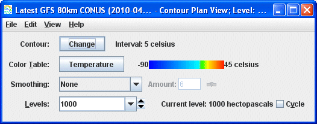
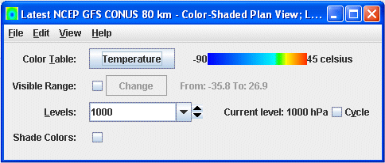

Overview
Plan views can be made in four types of displays: Contour Plan View, Color-Filled Contour Plan View, Color-Shaded Plan View, and Value Plots. Contour Plan View and Color-Filled Contour Plan View have the same properties. For more information on the Value Plots display, see Value Plot Controls.

Image 1: Contour Plan View Controls
Image 1: Contour Plan View Controls

Image 2: Color-Shaded Plan View Controls
Image 2: Color-Shaded Plan View Controls
Properties
- Contour - Opens the Contour Properties Editor to change how the contours appear in the Main Display window. This is an option for the Contour Plan View and Color-Filled Contour Plan View display types.
- Color Table - Shows the active color table and the associated high and low data values in the units of the display. As the mouse pointer is moved over the color bar, the value at a particular color is shown. Right click on the color bar or click on the button that displays the name of the Color Table to make modifications to the color bar. This allows for opening the Color Table Editor, changing the range, selecting other color tables, etc. This is an option for the Contour Plan View, the Color-Filled Contour Plan View, and the Color-Shaded Plan View display types.
- Smoothing - Smooths the grid. There are seven types of smoothing: None, 5-point, 9-point, Gaussian Weighted, Cressman Weighted, Circular Aperture, and Rectangular Aperture. The amount of smoothness can be set for all except the 5 and 9-point smoothers. The higher the amount, the smoother the grid. For the Cressman, Circular and Rectangular aperture smoothing types, the smoothing factor is the radius in grid spacing units.
- Levels - Lists the native grid levels. Click on one level value to reset the plan to that level. The plan level in use is shown in the data's native altitude units. The Levels box is editable. Click in the box, enter a value and hit Enter to set your own value. Additionally, clicking on the arrows to the right of the Levels box to switches levels, or clicking on the Cycle check box animates vertically through all available levels. This is an option for the Contour Plan View, the Color-Filled Contour Plan View, and the Color-Shaded Plan View display types. The Dwell value can be set via the text box or slider, in half second intervals, to control the speed of the level cycling.
- Visible Range - Determines what parts of the data is actually
shown. Click the
 button to set the
range of data shown. Once the checkbox is checked, the Visible Range will be applied to the data in the Main Display window. This is an option in the Color-Shaded Plan View.
button to set the
range of data shown. Once the checkbox is checked, the Visible Range will be applied to the data in the Main Display window. This is an option in the Color-Shaded Plan View. - Texture Quality - Sets the quality of the displayed texture. A higher quality will take longer to render and user more memory. This is an option for the Color-Shaded Plan View display type.
- Shade Colors - Colors every pixel to give a smooth gradation of color. The alternative is coloring an area of pixels corresponding to a single data grid cell with one color. This is an option for the Color-Shaded Plan View display type.
- Mode - Sets the way the texture is displayed. The options are Solid, Mesh, or Points. This is useful for looking at the structure of the underlying data. This is an option for the Color-Shaded Plan View display type.
- Point Size - Sets the size of the points when the Points Mode is selected. This is an option for the Color-Shaded Plan View display type.
Menus
Many of the menu items seen utilizing this display are standard options that can be found in the Menus section of the Layer Controls page. However, there are some options that are unique to this display.
The Edit menu has these unique options:
- Levels - Represents the level where the data is displayed. This is an option for the Contour Plan View, Color-Filled Contour Plan View, and the Color-Shaded Plan View display types.
- Change Contours - Opens the Contour Properties Editor to change how the contours appear in the Main Display window. This is an option for the Contour Plan View and the Color-Filled Contour Plan View display types.
The View menu has these unique options:
- Use Grid Projection - Re-centers the display and resets the zoom level back to the display's initial settings without changing any other preferences that have been modified. This is an option for the Contour Plan View, the Color-Filled Contour Plan View, and the Color-Shaded Plan View display types.
- Enable Adaptive Resolution (Under Development) - Turns adaptive resolution on or off for the layer. This menu item is only available if adaptive resolution is enabled in the User Preferences. Note that adaptive resolution is still under development.